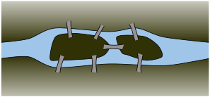

Investigate!
In the time of Euler, in the town of Königsberg in Prussia, there was a river containing two islands. The islands were connected to the banks of the river by seven bridges (as seen below). The bridges were very beautiful, and on their days off, townspeople would spend time walking over the bridges. As time passed, a question arose: Was it possible to plan a walk so that you cross each bridge once and only once? Euler was able to answer this question. Are you?
